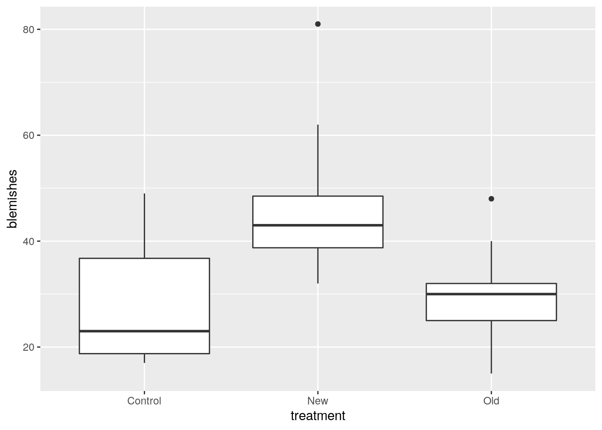

Is a new skin cream superior to others on the market? To be better, a skin cream should remove more skin blemishes from the person it is tested on. This report describes a study in which a new skin cream, labelled New, was compared with the best crean currently on the market, labelled Old, and a placebo cream, Control. Our aim is to compare these three creams in terms of the numbers of blemishes they remove. We hope to see that the new skin cream is significantly better than the others at removing skin blemishes.
We need to load a couple of packages first:
library(tidyverse)## ── Attaching packages ──────────────────────────────────────────────── tidyverse 1.2.1 ──## ✔ ggplot2 3.2.1 ✔ purrr 0.3.2
## ✔ tibble 2.1.3 ✔ dplyr 0.8.3
## ✔ tidyr 1.0.0 ✔ stringr 1.4.0
## ✔ readr 1.3.1 ✔ forcats 0.4.0## ── Conflicts ─────────────────────────────────────────────────── tidyverse_conflicts() ──
## ✖ dplyr::filter() masks stats::filter()
## ✖ dplyr::lag() masks stats::lag()library(smmr)Thirty subjects were randomly assigned to one of the three creams, and the number of blemishes removed from each subject was recorded. The data are as follows, being separated in the data file by single spaces:
my_url="http://www.utsc.utoronto.ca/~butler/assgt_data/cosmetic-wide.txt"
cosmetic=read_delim(my_url, " ")## Parsed with column specification:
## cols(
## New = col_double(),
## Old = col_double(),
## Control = col_double()
## )cosmetic## # A tibble: 10 x 3
## New Old Control
## <dbl> <dbl> <dbl>
## 1 81 48 18
## 2 32 31 49
## 3 42 25 33
## 4 62 22 19
## 5 37 30 24
## 6 44 30 17
## 7 38 32 48
## 8 47 15 22
## 9 49 40 NA
## 10 41 NA NAThree of the 30 subjects dropped out before the study was complete; these are the missing values in the data set above.
The data in the current format are not suitable for analysis because they are not “tidy”: the three columns are all numbers of blemishes under different conditions, and the column names are not variables themselves but levels of a categorical variable that says which skin cream a subject received. We need the numbers of blemishes in one column, with a second column saying which treatment (cream) the subject received.
That is to say, we need to make the data set longer (and to remove the missing values):
cosmetic %>%
pivot_longer(everything(), names_to="treatment",
values_to="blemishes", values_drop_na=T) -> cosmetic_tidy
cosmetic_tidy## # A tibble: 27 x 2
## treatment blemishes
## <chr> <dbl>
## 1 New 81
## 2 Old 48
## 3 Control 18
## 4 New 32
## 5 Old 31
## 6 Control 49
## 7 New 42
## 8 Old 25
## 9 Control 33
## 10 New 62
## # … with 17 more rowsThis is now tidy, and we can work with it.
We begin by plotting the data. With one quantitative and one categorical variable, a boxplot is suitable:
ggplot(cosmetic_tidy, aes(x=treatment, y=blemishes)) + geom_boxplot()
The New and Old groups both have upper outliers, with the one in the New group being especially far out. As well, the Control group distribution appears skewed to the right (long upper whisker) and more variable than the other groups.
As far as medians are concerned, the New cream removed more blemishes on average for our data, with the Old and Control creams being fairly similar. But the real question of interest is whether this difference generalizes: that is to say, whether that applies to all individuals that apply these creams, rather than just the ones we happened to look at. To assess that, we need a hypothesis test.
To compare three groups, we need to use something like analysis of variance. This assumes two things: approximate normality within the groups, and approximately equal spreads between the groups. We have already noted that equal spreads is questionable (the Control group appears more spread out than the others), and because of the outliers, normality is questionable also. The groups are small (10, 9, and 8 observations) so it is necessary to require that the data are closer to normal than this (the Central Limit Theorem will not help much).
With that in mind, the most sensible test here seems to be Mood’s median test:
median_test(cosmetic_tidy, blemishes, treatment)## $table
## above
## group above below
## Control 2 5
## New 9 1
## Old 2 7
##
## $test
## what value
## 1 statistic 10.463492063
## 2 df 2.000000000
## 3 P-value 0.005344186This tells us that the three groups do not all have the same median. We therefore follow up with pairwise median tests to find out which groups differ:
pairwise_median_test(cosmetic_tidy, blemishes, treatment)## # A tibble: 3 x 4
## g1 g2 p_value adj_p_value
## <chr> <chr> <dbl> <dbl>
## 1 Control New 0.0578 0.173
## 2 Control Old 0.447 1
## 3 New Old 0.0184 0.0553Looking at the adjusted P-values in the last column, we find that none of the groups differ significantly! Having said that, we note that the New-Old comparison almost reaches significance, but the comparison with Control is not significant in either case.
The analysis shows that there is at least one significant difference between the creams, but the pairwise median tests don’t (strictly) reveal anything significant. I think the fairest conclusion to draw here is that New is almost significantly better than Old but not compared to Control. So we have a suggestion that New is best, but not anything concrete. I think that the Control measurements are too variable (and there are too few of them) to be able to make a more concrete conclusion. My recommendation, therefore, is that (given we appear to be stuck with a Mood’s median test) that we should have collected more data. This would have enabled a clearer conclusion. This is in some ways not surprising, because we know Mood’s median test does not use the data very efficiently (just above/below the overall median, rather than the actual value). If an ANOVA of some kind had been appropriate here, we would have an easier time with the conclusions.